40009 · "硬核"拼贴
拼贴中央直接出现 RUN DMC 字样，左下还有 DMC 字样。建议替换文字及对应拼贴图案。
img_shelter_american_009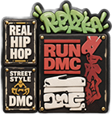
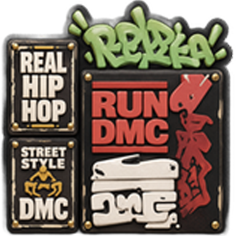
2026-10-12。范围：dev_Shelter_2.0 家具表的 281 件家具，逐项浏览场景图与图标；资源快照为 dev_shelter_s1 @ 7e9a1459c727c1fd55b6c1133a8748c5d7db4aa1。引用图片缺失 0 件。未修改配表或资源。
4 件有明确可辨认的第三方元素，10 件列为待复核候选，其余 267 件本次未识别出明确第三方元素。这是视觉初筛，不是已认定侵权清单；未核验授权、源文件和素材采购记录。低分辨率细节无法排除遗漏。
拼贴中央直接出现 RUN DMC 字样，左下还有 DMC 字样。建议替换文字及对应拼贴图案。
img_shelter_american_009

红色鞋盒上直接出现 NIKE 文字和勾形标志，多双鞋侧面也有明显勾形标志。建议鞋盒、鞋身一起替换。
img_shelter_american_019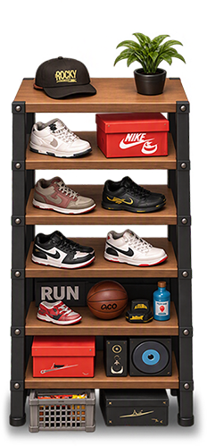
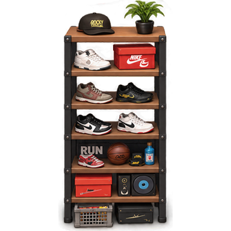
四片杠铃片上有 LIFE FITNESS 品牌字样。建议改为自有虚构名称或仅保留重量。
img_shelter_gym_022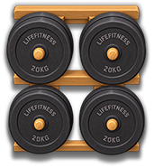
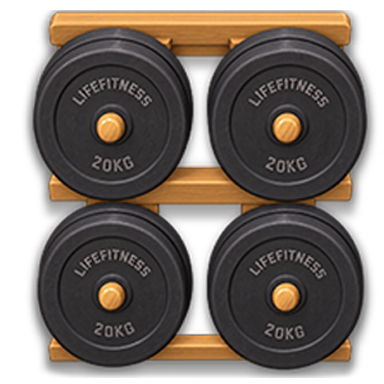
下层直接出现马里奥摆件（红帽、胡子、蓝背带裤）；中层蓝色幽灵还需核对是否参考吃豆人角色。建议整组摆件原创替换。
img_shelter_arcade_004褶纹、低矮无脚的软榻造型具有具体设计款家具的特征。仅为外观设计复核项，未确认对应产品或权利。
img_shelter_kitchen_009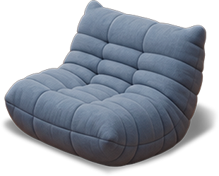
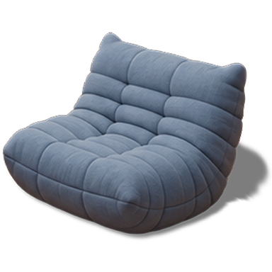
红色厨师机有较强的商业产品造型特征；未看到清晰品牌文字。核对美术参考来源，不直接判定侵权。
img_shelter_bakery_012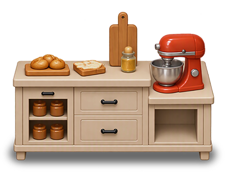
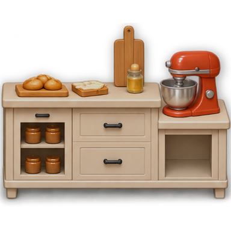
画中车辆具有复古跑车的具体车型特征；未辨认出清晰车标。核对车型参考及画作来源。
img_shelter_dining_007右上摆件有护目镜、圆筒身体等类似小黄人的组合特征，但颜色和造型不同，不能确认身份；请美术核对原始参考。
img_shelter_american_017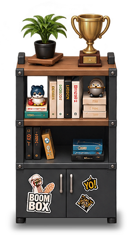
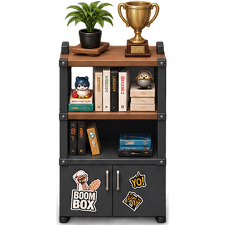
上排三个熊形潮玩采用相近的标准化身体和关节造型，需核对是否参考品牌潮玩；不能仅凭熊造型认定侵权。
img_shelter_american_021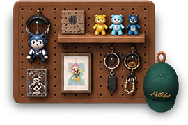
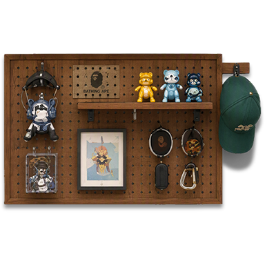
城堡、道路和平台构成游戏地图画面；与游戏主题成套出现，需核对原图来源，当前无法识别具体游戏。
img_shelter_arcade_005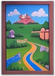
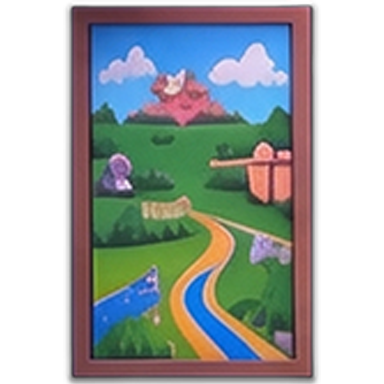
含掌机、数台主机及双摇杆手柄，需核对具体设备造型及原始参考；未发现清晰品牌标志。
img_shelter_arcade_012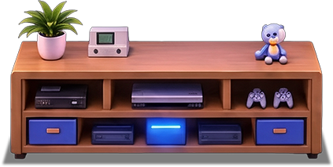
机台屏幕含城堡地图，上方含蘑菇样装饰。需核对是否来自具体游戏；当前未确认直接复制。
img_shelter_arcade_013画作以主机和手柄结构图为主体，需核对是否描绘具体商业主机，以及画作来源。
img_shelter_arcade_017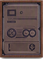
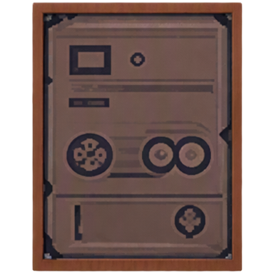
复古海报中含游戏手柄结构图，需核对具体手柄及海报来源；RETRO 字样本身不作为风险依据。
img_shelter_arcade_018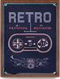
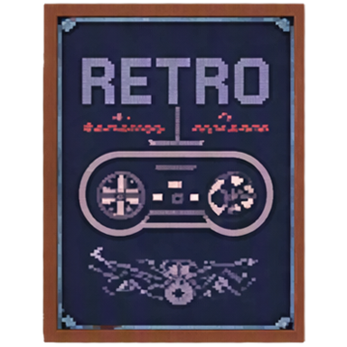
普通熊、积木、城堡、星星、泛用街机和 ROUTE 66 路牌，不仅因题材相似就列为侵权。40012、40014、40015 等小画框或书封细节分辨率不足，未识别到具体 IP，但也不能确认其素材来源合法。建议美术提供原始参考或源文件复核。
修改时需同时替换场景图和图标；如其他分支或宣传素材复用了同图，也需同步检查。本报告没有检查未入家具表的闲置资源、动效帧或其他分支。